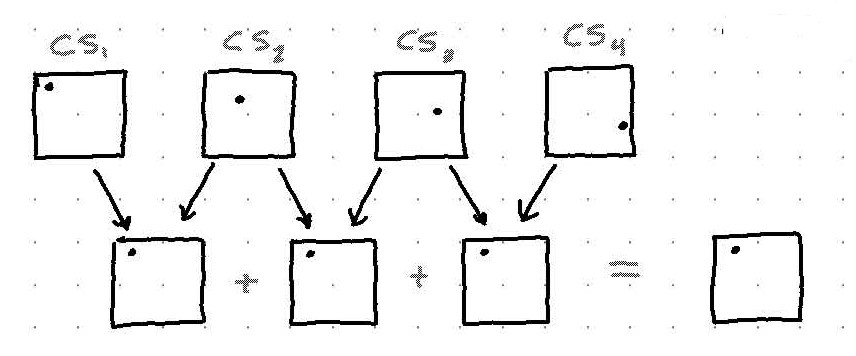

Registration Results for Nanoflare drifts
- EvanThis week I spent time extending the registration method by Guizar-Sicairos, Thurman, Fienup 1 to a multiframe setting.
In this report, I give a mathematical formulation of this extension, as well as mathematical descriptions of our earlier ad hoc multiframe methods.
Finally, I compare error of the 3 methods at various drift angles, drift velocities and photon arrival counts.
Adhoc Multiframe #1
Assuming constant linear drift, cross-correlations between adjacent frames should all contain an identical delta at a location corresponding to the drift vector. These cross correlations can then be summed to help eliminate noise.
Similarly, this process can be repeated for pairs of frames separated by time steps. This is illustrated below.

We call the images generated by this process correlation sums, denoted as
Since is a sum of cross-correlations of frames separated by time steps, the location of the delta is scaled by .
Finally, we can obtain an estimate for the drift vector by taking argmax of the correlation sums, scaling by , and taking the mean of the result.
Adhoc Multiframe #2
This method uses the fact that each correlation sum is close to a shifted copy of the previous correlation sum, where the shift amount is equal to the drift vector.
If we again take cross-correlation of these correlation sums, we should end up with a delta in the same position for each, as shown below.

Finally, we take argmax of the correlation sum to derive a drift vector estimate. This process is given mathematically below.
From testing, this method gives consistently lower estimation error than the first method.
Extension of Guizar-Sicairos, Thurman, Fienup registration
Original Method
The algorithm presented by Guizar-Sicairos, Thurman, Fienup is a 2-step subpixel registration method which first obtains a coarse, whole-pixel drift vector estimate from standard cross-correlation and then refines it by upsampling the cross-correlation with sinc interpolation.
The major argument of this paper is that the refined estimation step can be greatly accelerated by directly evaluating the DFT in a region around the coarse estimate as opposed to a zero-padded FFT technique.
These coarse and fine estimates are then fused to obtain a complete subpixel registration.
Extension
To extend this method to a multiframe setting I first substitute the frequency domain product with a similar sum of products for multiple frames
The algorithm is carried out identically to obtain a multiframe, subpixel drift vector estimate which I denote (for Guizar-Sicairos).
Similar to Ad Hoc method #1, the results can be fused for all correlation sums
Drift Error Results
I tested each of these multiframe registration methods on simulated nanoflare video images under different photon arrival rates, drift velocities, and drift angles. The Guizar-Sicairos extension usually performs better than the ad hoc methods, especially in the low SNR scenarios.
I repeated each experiment 20 times. The shaded region around the lines corresponds to +-1 standard deviation.
The error tends to decrease with increasing SNR and decreasing drift velocity, as expected. One result I found surprising is that the estimation error is fairly independent of drift angle.
Summary
- extended subpixel method by Guizar-Sicairos, Thurman, Fienup to multiframe setting
- compared three methods in Monte-Carlo simulation under a variety of scenarios
Next week I plan to finish the Structured Low-Rank Algorithms paper and come to a conclusion about its applicability to our problem.